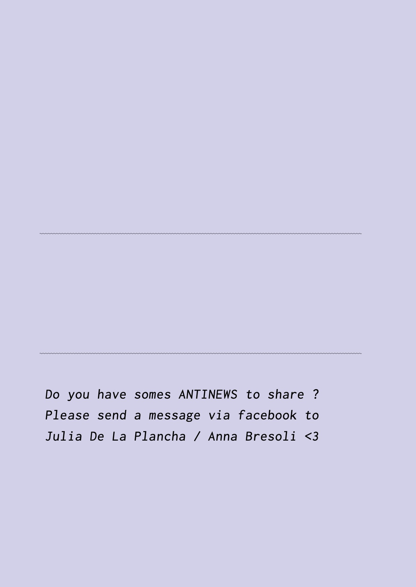
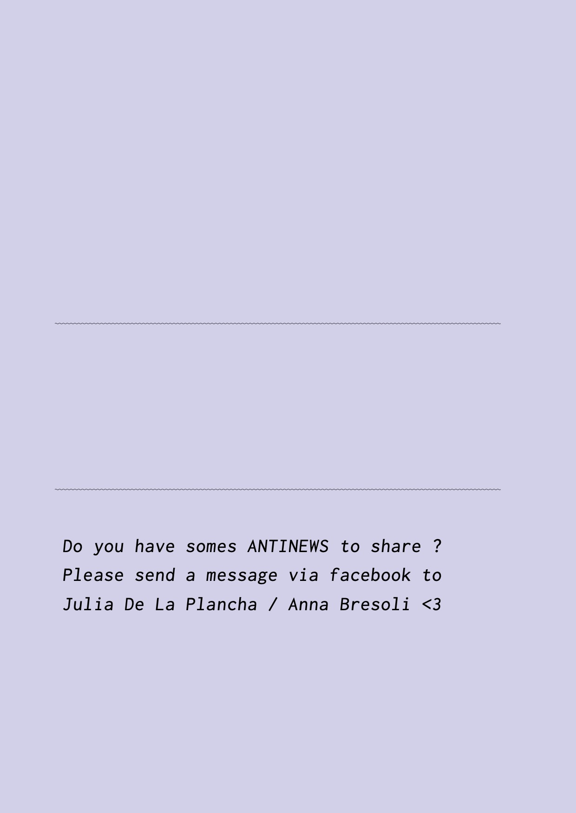
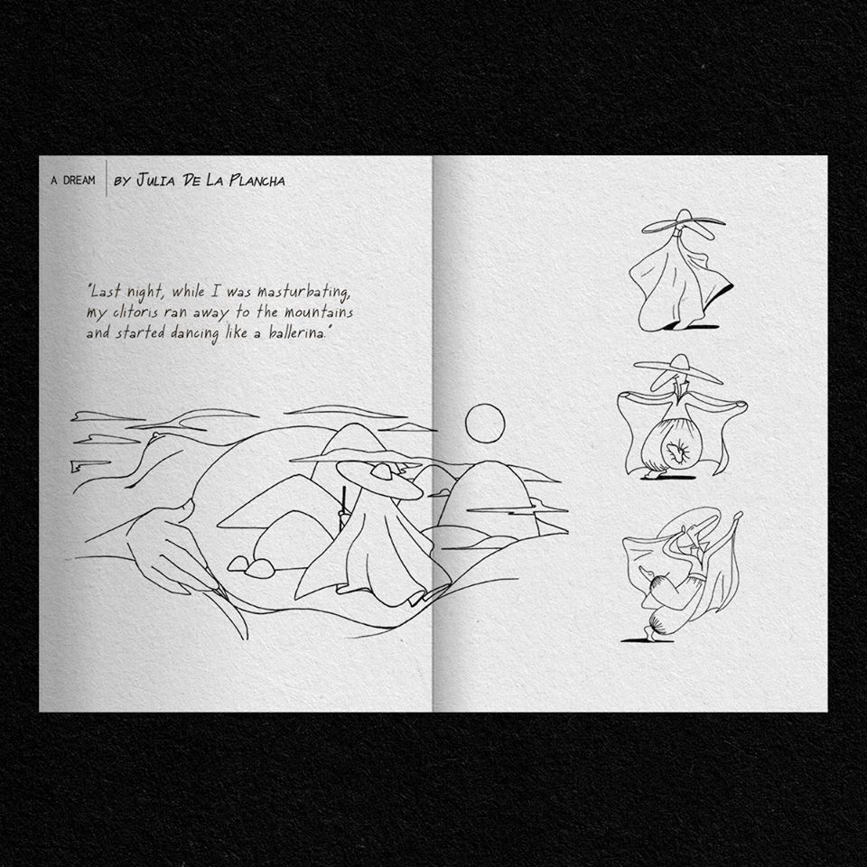
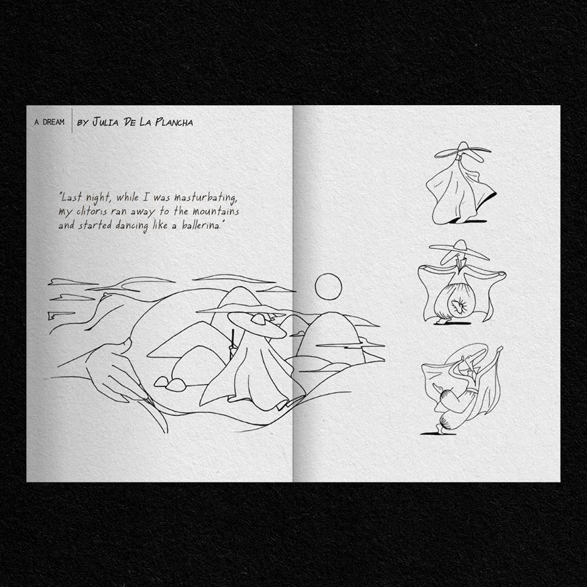
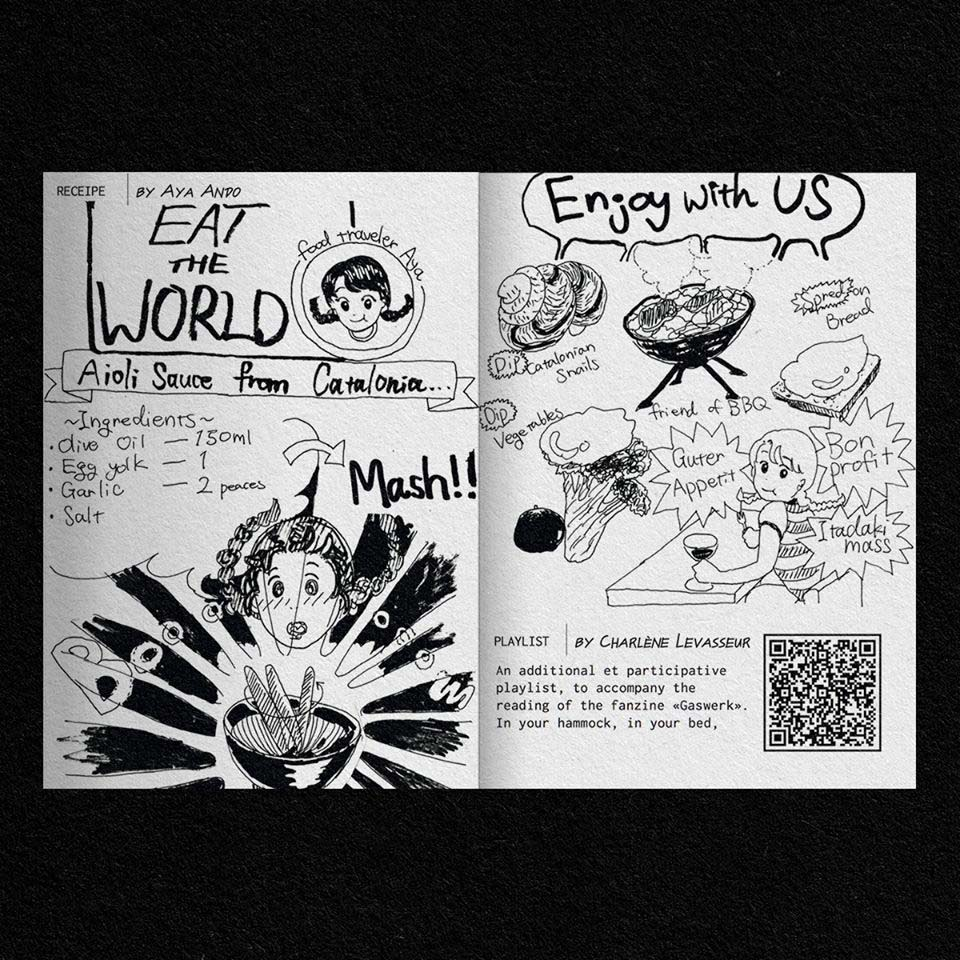
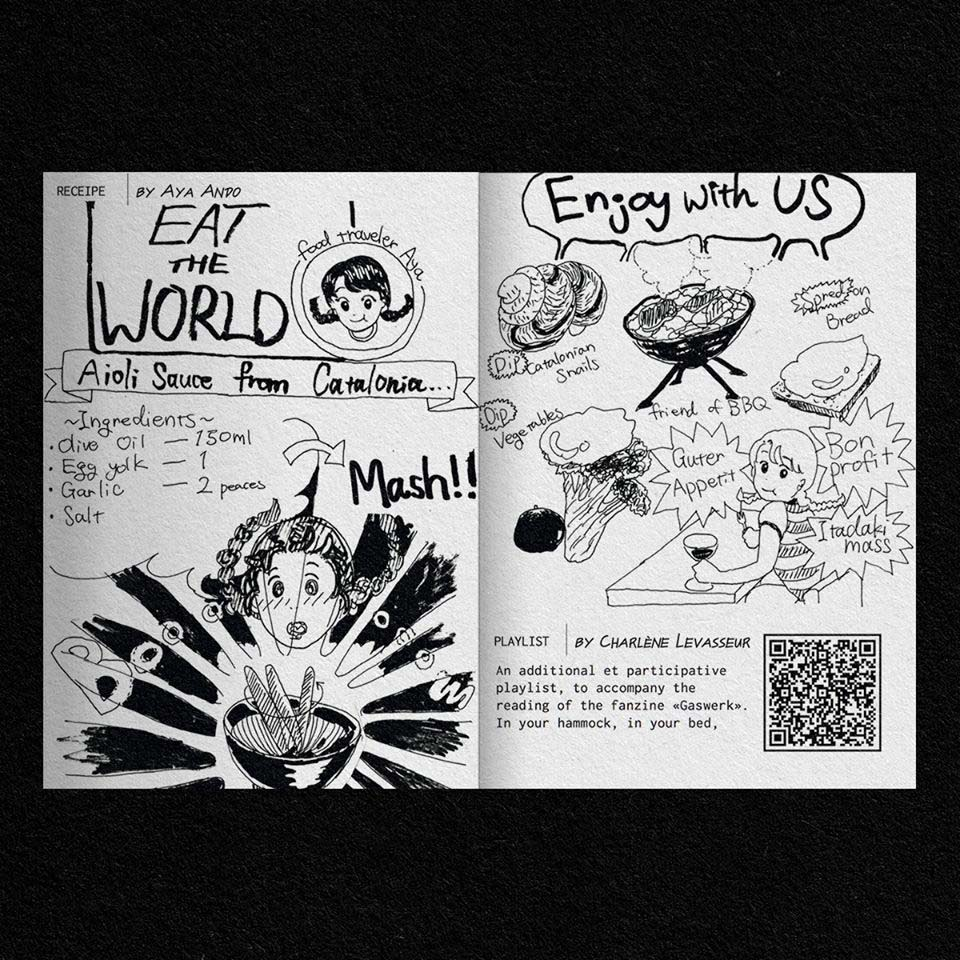

Feat
Gazwerk #2, 2020, reporters Julia Castel & Anna Bresoli, interview about the collective ExFormation, Berlin
Gazwerk #1, 2020, reporters Julia Castel & Anna Bresoli, interview about Claudio Puntin, Berlin
Gazwerk #0, 2020, reporters Julia Castel & Anna Bresoli, interview about interview on Noah, Berlin


 



 



 
